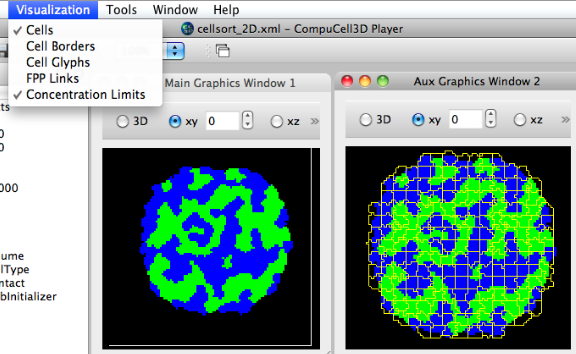
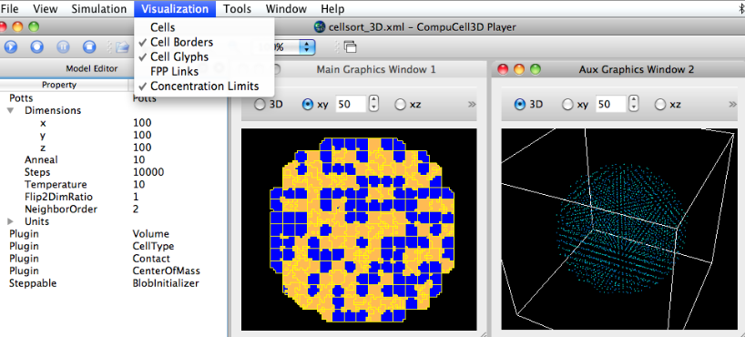

Misc bugs
Misc. bugs
- while 2D cellsort sim is running, Vis->cell glyphs ==> pops up warning about no CoM def'd, but hangs (on OSX)
(not sure how up to date this is will recent release)
- for an additional (Aux) graphics window, the Cell Borders vis remain (incorrectly) displayed
- click on the "zoom in" (+) icon:
File "/Users/heiland/dev/Glazier/cc3d-oct2010/player/Plugins/ViewManagerPlugins/SimpleTabView.py", line 1618, in zoomIn
self.activeWindow().zoomIn()
AttributeError: 'SimpleTabView' object has no attribute 'activeWindow'
- graphics window needs to be resized (stretched horiz) in order
to access the "Field Type" popup. Clicking on the ">>" on a
reduced size window only provides access to the camera icon.
- pulling any of the View frames (e.g. Model Editor, Plugins) out
of the main GUI results in their *always* being on top of the main GUI,
i.e. clicking on the main GUI will not bring it to the front. (on OSX)
- for cellsort_3D.xml, 3D view, clicking on the camera icon (to dump images) --> can never return focus to main GUI
- on Output Settings in Prefs Panel, can select both "Do not output..." and "Output lattice data..."
- what the heck does File -> [Save/Open] Screenshot Description mean? What exactly is saved?


Back to index